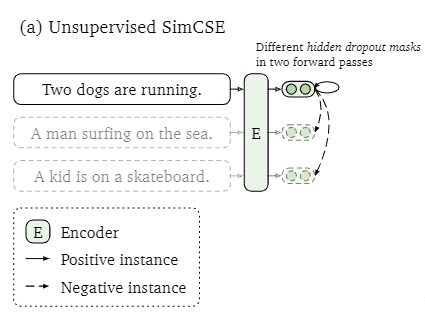
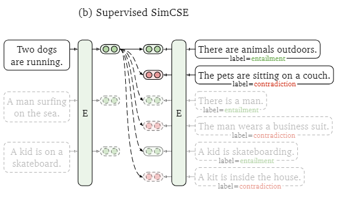
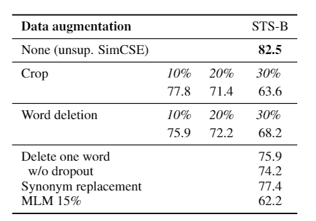
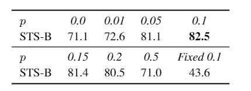
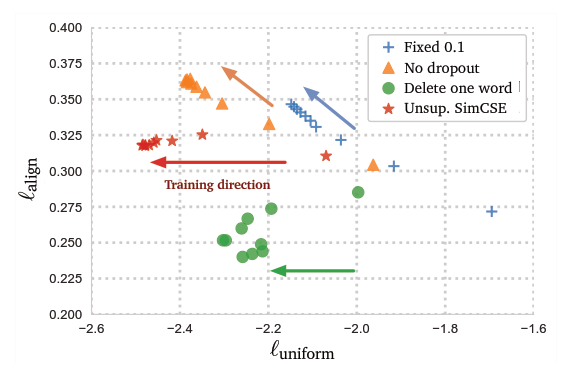
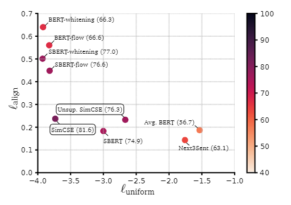

论文地址：SimCSE:Simple Contrastive Learning of Sententce Embeddings
摘要
SimCSE，是简单的对比学习框架，提高了句子嵌入的SOTA。我们首先描述了一种无监督方法，它采用一个输入句子并在一个比较客观的条件下预测它自己，只使用标准dropout作为噪声。这种方式效果很好，和之前的有监督方法一样。发现dropout作为最小的数据增强，移除他们会导致表达崩溃。然后提出了一种有监督的方法，将自然语言推理数据集中的注释对结合到我们的对比学习框架中，使用entailment对作为positive，contradiction对作为硬负。在标准语义文本相似度(STS)任务上评估SimCSE，使用BERT-base的无监督模型和有监督模型分别实现了76.3%和81.6%的Spearman相关性，与之前的最佳结果相比提高了4.2%和2.2%。我们还从理论和经验上证明，对比学习目标将预先训练的嵌入各向异性空间正则化，使其更均匀，并且当有监督信号时，它能更好地对齐。
介绍
SimCSE是一个简单的对比句子嵌入框架，可以从无标签或者有标签数据集生成更好的句子嵌入，当和BERT或者RoBERTa组合在一起时对比学习非常有效。
无监督的SimCSE通过用作噪声的dropout预测输入句子自身。也就是说，向预训练编码器传递两次相同的句子：通过两次标准的dropout，获得两个不同的嵌入作为“正例positive”。然后把相同batch的其他句子作为“负例negatives”，模型通过负例对正例预测。这种方式大幅度提升预测下个句子和离散数据增强(例如词删除和替换)任务的性能，堪比以前的监督学习方式。

有监督的SimCSE建立于使用自然语言推断(natural language inference， NLI)数据集做句子嵌入，在对比学习中整合注释句子对。把蕴含对作为正实例，添加对应的矛盾对作为hard负例，大大提升了性能。对比其他数据集，NLI数据集在学习句子嵌入时最为高效。

借用Wang和Isola(2020)的分析工具，该工具利用语义相关的正对之间的对齐和整个表示空间的一致性来衡量学习嵌入的质量。通过实证分析，无监督SimCSE本质上提高了一致性，同时避免了dropout噪声的退化对齐，从而提高了表示的表现力。同样的分析表明，NLI训练信号可以进一步提高正对之间的对齐，产生更好的句子嵌入。将其与最近的发现联系起来，即预先训练的单词嵌入受到各向异性的影响，从频谱的角度证明了对比学习目标将句子嵌入空间的奇异值分布压平，从而提高一致性。
背景：对比学习
对比学习旨在通过把语义上的近邻聚合，非近邻分离来学习有效的表示。假设有一串匹配对样例，记作$D={(x_i, x_i^{+})}_{i=1}^m$，$x_i,x_i^+$语义相关。记$h_i,h_i^+$代表$x_i,x_i^+$的分布，对于一个有N对的mini-batch来说，$(x_i, x_i^{+})$的损失函数如下：
$${\iota}_i = -\log \frac{\frac{e^{sim(h_i,h_i^+)}}{\tau}}{\sum_{j=1}^{N}\frac{e^{sim(h_i,h_j^+)}}{\tau}}\tag{1}$$
${\iota}$是温度超参，$sim(h_1,h_2)=\frac{h_1^Th_2}{||h_1||\cdot ||h_2||}$。使用例如BERT或者RoBERTa的预训练语言模型对输入句子编码：$h=f_{\theta}(x)$，然后通过对比学习用式1微调所有参数。
负实例
关键问题之一是构建$(x_i, x_i^{+})$对。
直观想法，把相同图像的两个随机transformer(例如裁剪、反转、变形、旋转)作为$x_i,x_i^+$。也可以通过类似词删除、重排序、替换的增强技术应用在语言表示上。然而，由于NLP的离散性，数据增强本质上是困难的。在中间表示上使用标准dropout优于这些离散算子。
在NLP中，相似的对抗学习目标在不同上下文中已经探索，在这些案例里，$(x_i, x_i^{+})$从问题-文章对这样的有监督数据集中手机，由于$x_i,x_i^+$的天然距离，这些芳芳经常使用双向编码器框架，例如对$x_i,x_i^+$使用两个独立编码器$f_{\theta _1},f_{\theta _2}$。对于句子嵌入，Logeswaran和Lee提出了通过把当前句子和下个句子组织成$(x_i, x_i^{+})$，使用双向编码器对比学习的方法。
对齐和一致性
Wang和Isola发现对抗学习相关的两个关键属性：对齐和一致性，提出使用这两个属性的衡量表达的质量。给定一个正例对$p_{pos}$的分布，对齐计算成对实例嵌入之间的预期距离(例如把已经标准化的表示累加)：
$$\iota _{align}\triangleq \underset{(x,x^+) \backsim pos}{\mathbb{E}}||f(x)-f(x^+)||^2 \tag{2}$$
另一方面，一致性衡量嵌入均匀分布的程度：_{
$$\iota _{uniform} \triangleq {\underset{x,y \backsim p_{data}}{\underset{i.i.d}{\mathbb{E}}}}e^{-2||f(x)-f(y)||^2} \tag{3}$$
$p_{data}$代表数据分布。这两个指标与对比学习的目标非常一致。正例应该保持接近，而随机实例的嵌入应该分散在超球体上。
无监督的SimCSE
收集句子$\{x_i\}_{i=1}^m=1$然后令$x_i^+=x_i$。使同一正例对工作的关键，在于对$x_i,x_i^+$的独立随机采样dropout。用在全连接层上进行dropout遮掩，就像attention表示的概率。默认p=0.1。令$h_i^z=f_{\theta}(x_i,z)$，$z$代表随记遮掩的dropout。把相同的输入送至编码器2次，获得两个有不同dropout遮掩的嵌入。对于一个有N个句子的mini-batch，训练目标变为：
$${\iota}_i = -\log \frac{\frac{e^{sim(h_i^{z_i},h_i^{z_i^\prime})}}{\tau}}{\sum_{j=1}^{N}\frac{e^{sim(h_i^{z_i},h_i^{z_j^\prime})}}{\tau}}\tag{1}$$
把dropout的噪声作为数据增强
作为最小的数据增强形式，相同句子的正例对，他们的嵌入只在dropout遮掩上存在不同。在STS-B development数据集上实验，即便删除一个单词，也会损伤性能并且没有一个离散的增强比dropout噪声性能更好。

我们还将这个自我预测训练目标与Logeswaran和Lee(2018)使用的下一个句子目标进行比较，使用一个编码器或两个独立的编码器。如表2所示，我们发现SimCSE比下一个句子目标的性能要好得多(STS- B上为82.5比67.4)，并且使用一个编码器而不是两个编码器会在我们的方法中产生显著差异。
工作原理

比较不同的遮掩率p值，默认的0.1发挥了最好的性能。当p=0和p=fixed 0.1时模型性能急剧下降。训练中每10步对模型的对齐和均匀性矩阵可视化，发现从一个预训练checkpoint开始训练，所有模型大大提升了均匀性。然而这两个特殊变量的对齐依然急剧下降，SimCSE因为对dropout噪声的利用保持了稳定的对齐。这也证明了从一个预训练checkpoint开始是非常重要的，因为这提供了好的初始对齐。“delete one word”因为较小的均匀矩阵提高了对骑行，但是在训练中逐渐劣于无监督SimSCE。

有监督SimCSE
直接从监控数据集中获取(xi, xi+)对，并使用它们来优化等式(1)。
对比作为硬负例
利用NLI数据集，把其中的对比对作为硬负例。在NLI数据集里，给定一个猜想，句子必须标注是否绝对正确(entailment)，或者可能正确(neutral)，或者绝对错误(contradiction)，因此每个猜想和他的蕴含假设，必然存在相应的矛盾假设。
拓展$(x_i, x_i^{+})$为$(x_i, x_i^{+},x_i^{-})$，分别代表假设、蕴含和矛盾假设。训练目标为：
$${\iota}_i = -\log \frac{\frac{e^{sim(h_i,h_i^+)}}{\tau}}{\sum_{j=1}^{N}(\frac{e^{sim(h_i,h_j^+)}+e^{sim(h_i,h_j^-)}}{\tau})}\tag{5}$$
向有监督SimSCE添加硬负例可以明显提升性能，添加ANLI数据集或者和无监督SimCSE组合都没有有效提升，使用双向编码器框架也会降低性能。
和各异向性的关联
近期工作表明语言分布中的各异向性问题，例如学习得到的嵌入在向量空间里占据了一个狭窄的圆锥空间，严重地限制了他们的表示。一种缓和各异向性问题的方法是消除主要成分，或者把嵌入映射到各异向性分布。另一种是增加正则化。SimCSE表明对比学习也能缓和各异向性问题。
各异向性问题和军训性相关联，都说明嵌入应当均匀分布在空间里。优化对比学习目标可以提高均匀性(或缓解各向异性问题)，因为目标将负实例分开。通过奇异谱角度这种分析词嵌入的方法，证明对比学习可以平滑句子嵌入单值分布并使表达更加各向同性。
假设f(x)标准化，当负例数量为无穷时，对比学习的渐进可以用等式表示：
$$-\frac{1}{\tau} \underset{x-\backsim p_{data}}{\mathbb{E}} [f(x)^Tf(x^+)] + \underset{x-\backsim p_{data}}{\mathbb{E}} [\log [e^{\frac{f(x)^Tf(x^-)} {\tau}}]] \tag{6}$$
前半部分控制正实例的项思醒，后半部分分离负例。当$p_{data}$通过$h_i=f(x_i)$由有限样例$\{x_i\}_{i=1}^m$对齐而来，可以把公式的后半部分用Jensen不等式转换：
$$\underset{x-\backsim p_{data}}{\mathbb{E}} [f(x)^Tf(x^+)] + \underset{x-\backsim p_{data}}{\mathbb{E}} [\log [e^{\frac{f(x)^Tf(x^-)} {\tau}}]] \\ = \frac{1}{m} \sum_{i=1}^m \log (\frac{1}{m} \sum_{j=1}^m e^{\frac{h_i^Tf(x^-)}{\tau}}) \\ \geq \frac{1}{\tau m^2} \sum_{i=1}^m \sum_{j=1}^m h_i^Th_j \tag{7}$$
把W视作$\{x_i\}_{i=1}^m$对应的句子嵌入矩阵，例如W的第i行是$h_i$。优化式子(7)，本质上最小化了ww⊤中所有元素总和的上界。即$Sum(WW^T)=\sum_{i=1}^m \sum_{j=1}^m h_i^Th_j$。
因为$h_i$正则化，所有$WW^T$对角线元素都是1，他的迹是常熟。如果所有对角线元素都是正的，$Sum(WW^T)$是$WW^T$最大特征值的上边界。当最下滑等式(6)的后半部分时，减少了$WW^T$的最大特征值，内在平滑嵌入空间的奇异谱。因此对比学习可以缓和表示的衰退问题，提升句子嵌入的均匀性。
相比较只预处理技术只是为了鼓励各向同性的表示，对比学习也通过等式(6)的第一部分优化了对齐正例对。
分析

图片展现了根据不同句子嵌入模型的平均STS结果的对齐性和均匀性，可以发现：
- 虽然预训练嵌入很好的对齐性，他们的均匀性很差，嵌入是高各异向性的。
- 类似BERT-flow和BERT-whitening的预处理方式极大提升了均匀性，但是损害了对齐性。
- 无监督SimCSE提升对齐性的同时保持了良好的均匀性。
- SimCSE在合并有监督数据进一步提升了均匀性。